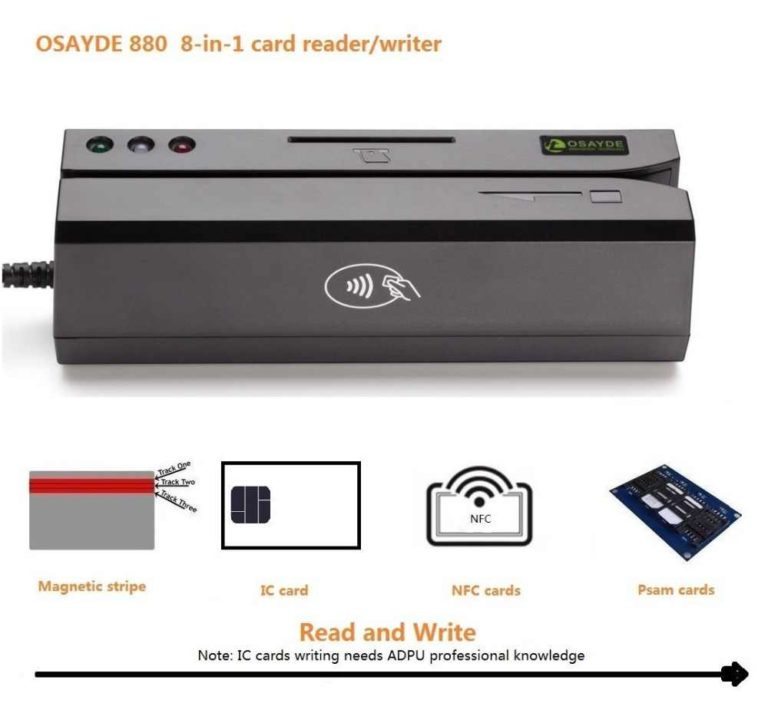

CC Cloning With Magnetic Stripe Writer
Hi guys I hope you all doing great! If you read the preview posts about dumps and skimming then you already know what dumps are and how can someone access your bank account money using a clone of your card.Today i will explain how a dump become a ready to swipe card.
To encode a dump in a magnetic card strip is very simple and the necessary tools are very easy to find and buy from internet.
Computer – The common laptop or home PC ,everyone know what it is and how to use it.
Pre Printed magnetic strip cards – are cards which look like the bank issued cards .The good quality cards even have the UV light security and the logo and hologram of the issuer.Those carders who hit high,like apple stores ,gold shops,etc need this kind of cards which they have to emboss with the card number,expire date and holder name.The clone will look like the genuine card and the fraud will be very difficult to detect .Some carder print by them self the plastics but pre printed plastic also can be buy.The price of a pre printed plastic with UV light bypass ,logo and hologram start from $10 and can reach $30.I’ll write a new post about pvc card printers,UV ribbons and card templates.
Embosser – it is a machine used to emboss the card details (card number,expire date and holder name) o the pre- printed card.In market you can find manual or automatic embosser, price start from $250 until $3000,according with the embossing speed and quality.
The software of the MSR must be installed in the computer and the machine must be connected to the computer by a data transfer wire and the MSR is ready to encode the dumps in the cards.
So with a pre printed card and embosser and an MSR the clone of the card is ready to use.Pre printed cards are embossed with the dump detail then using the MSR the magnetic strip of card encode the dump.And here you have the card ready to swipe.
This all for today guys.Stay safe and good luck!